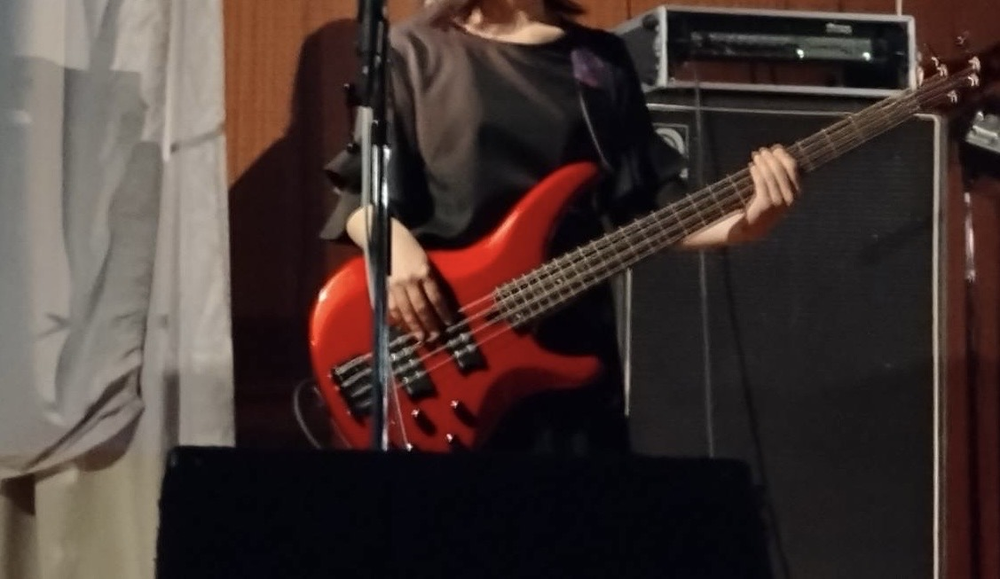
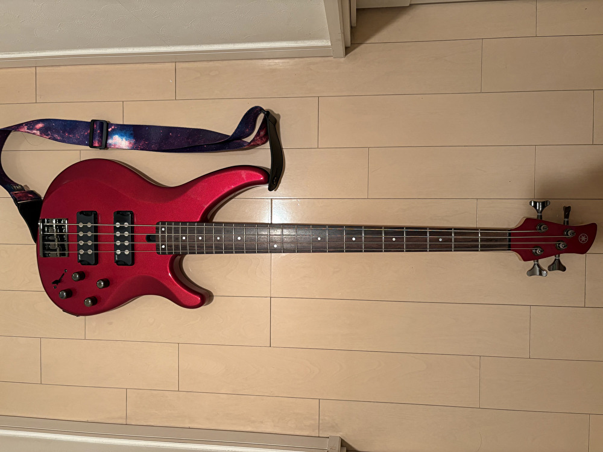
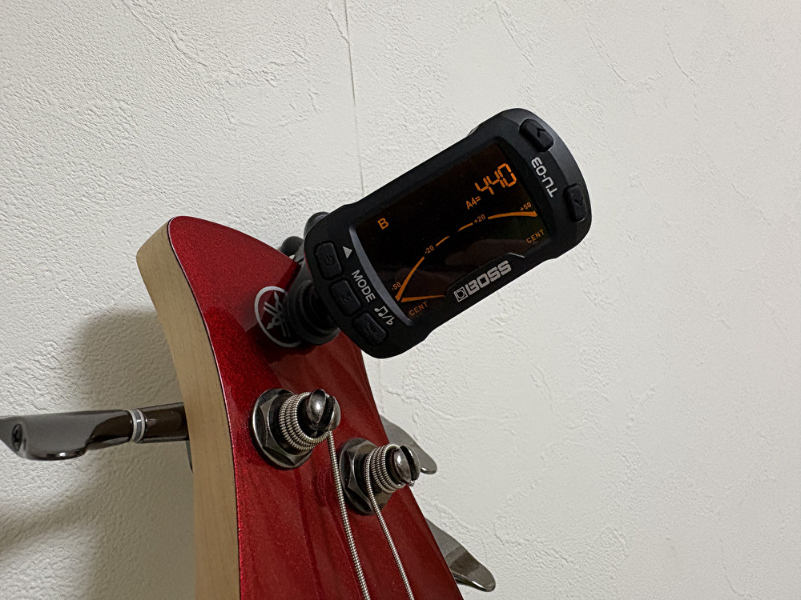
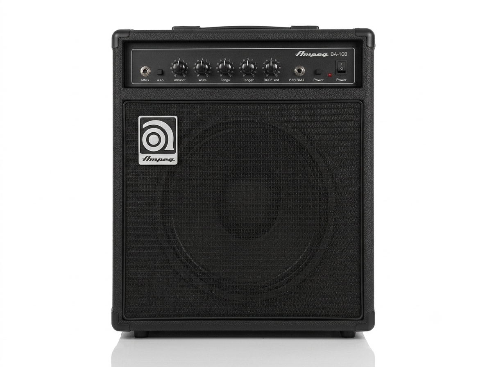
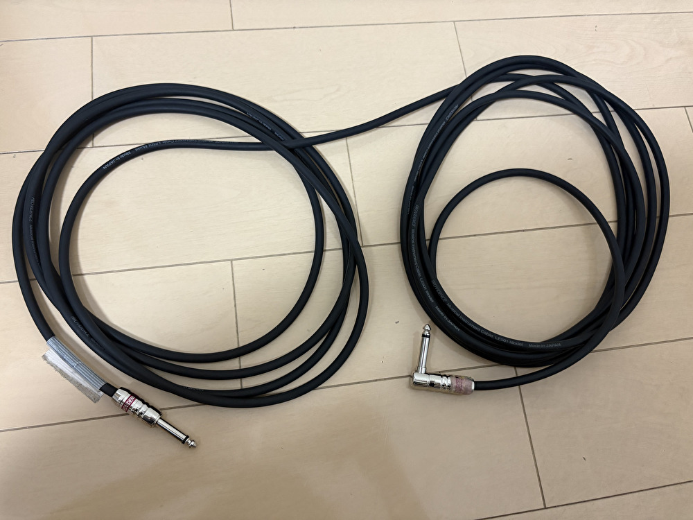
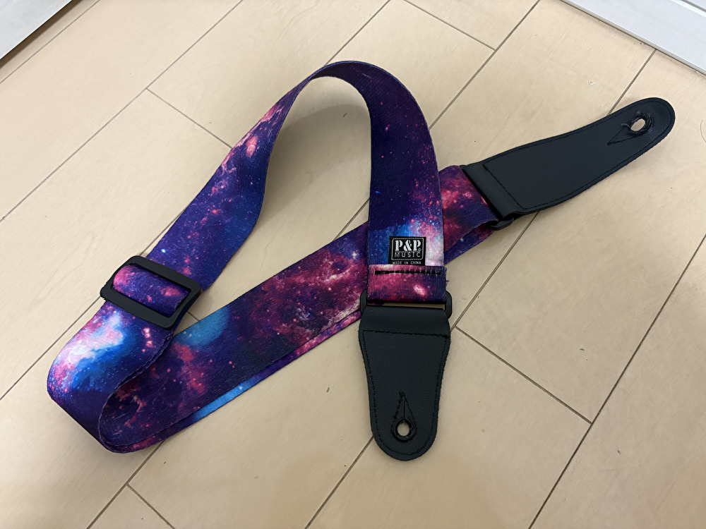
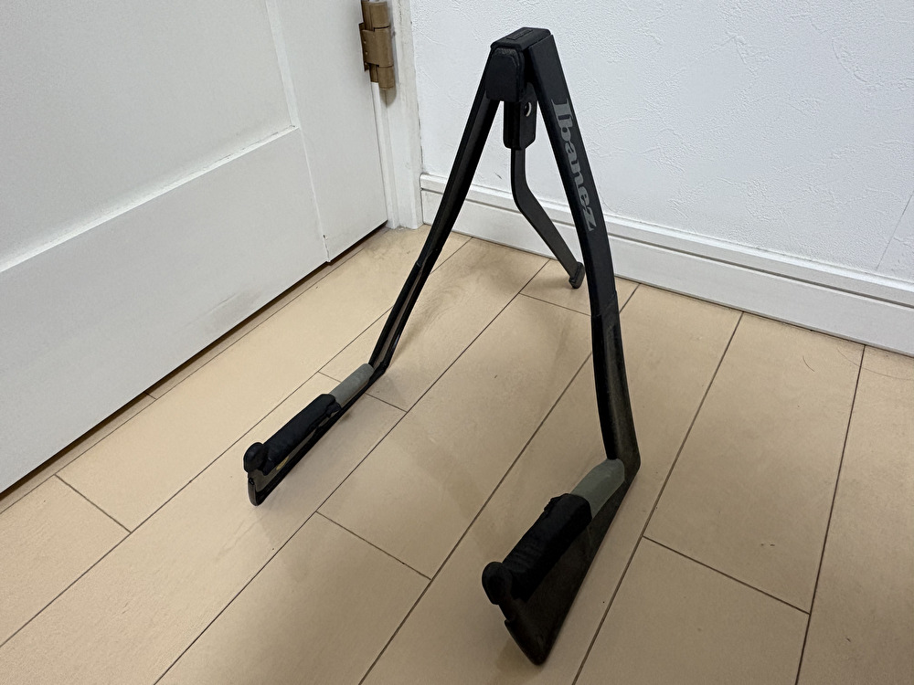
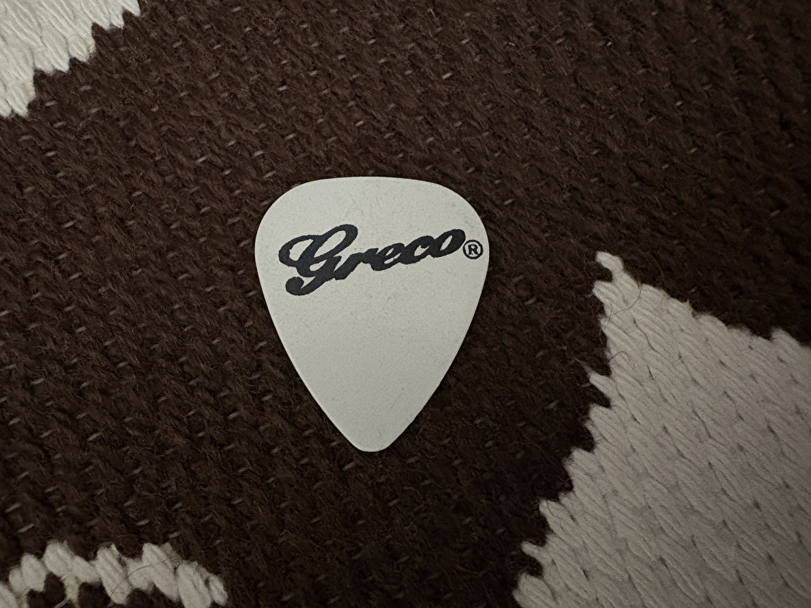

このページでは、ベースを始めるために必要な機材について紹介していきます

一番大事な機材。
扱いやすいジャズベースやプレシジョンベースがおすすめ。初心者の人には4弦タイプのベースが定番。

弦のチューニングを正確に合わせるための必須アイテム。
初心者には画像のようなクリップ型が便利。

音を出すための機材。電気信号を音に変換するもの。
画像のような小型アンプの他にも、近所への音漏れが気になる人はヘッドホンアンプがおすすめ。

ベース本体とアンプをつなぐケーブル。3～5mのものを選ぶと安心。
ライブハウスでの出演も視野に入れるなら7mがおすすめ。（画像のは7m）

安定して演奏するために必要なアイテム。
長さの調節がしやすい画像のようなアジャスタータイプがおすすめ。

ベースが倒れないようにするための必須アイテム。
スペースが気になる人には画像のようなコンパクトタイプもおすすめ。

指弾きだけでなく、ピック弾きもできると表現の幅が広がる。
ゴリっとした太い音を出したい人におすすめ。